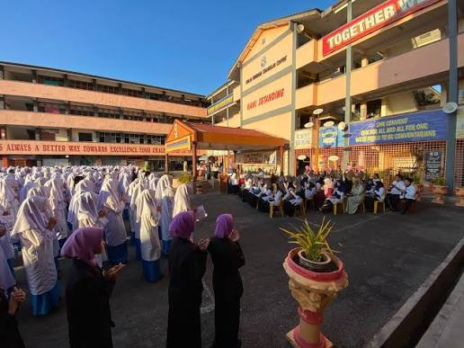
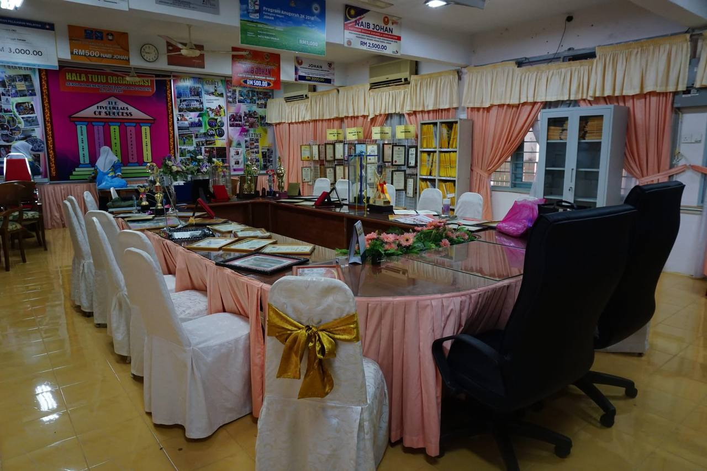
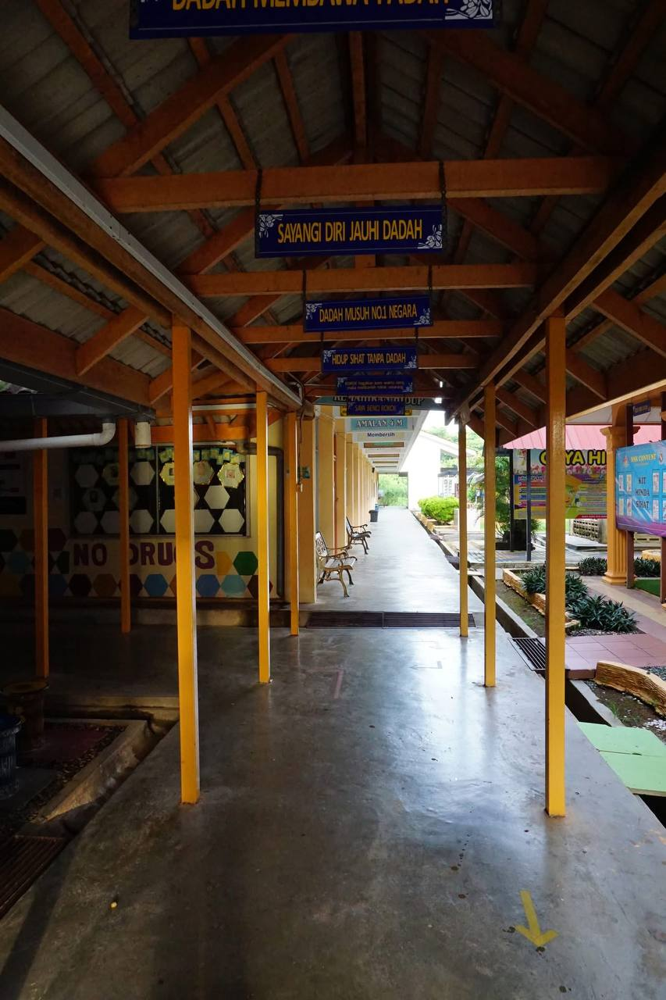
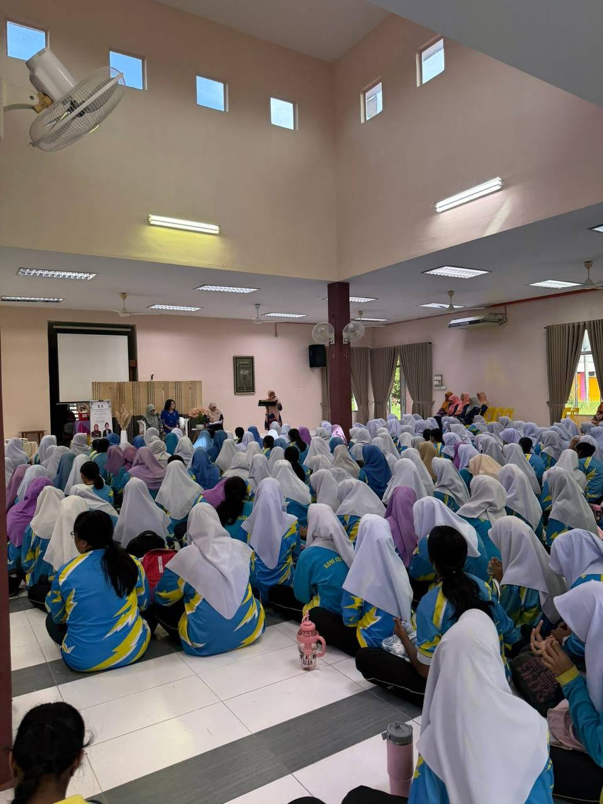
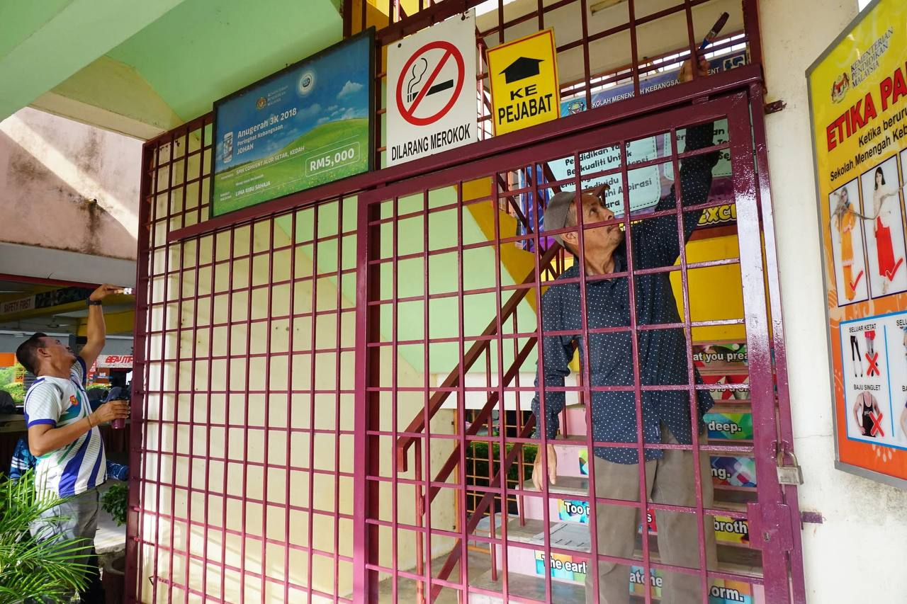
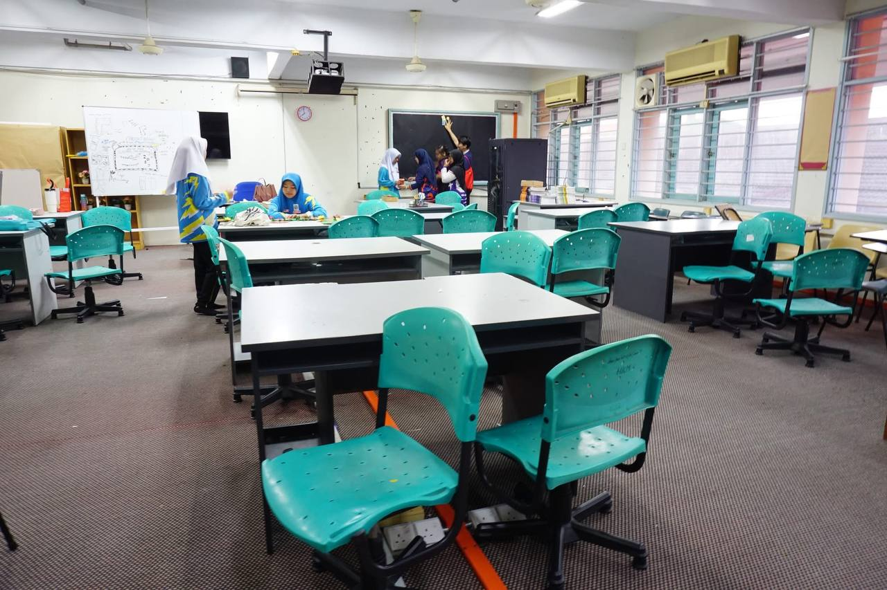

Sekolah Menengah Kebangsaan Convent (M), also known as SMK Convent (M), is a secondary school located at Jalan Tanjung Bendahara.
In 2009, the school had 1,068 students, and all of them were female students. This makes the total number of students also 1,068.
The school has about 69 teachers who are responsible for guiding and educating the students. They work hard to ensure students receive a good education and support in their studies.
SMK Convent (M) is known as a school that focuses on discipline, academic achievement, and personal growth. It helps students to become more confident and prepared for their future.





